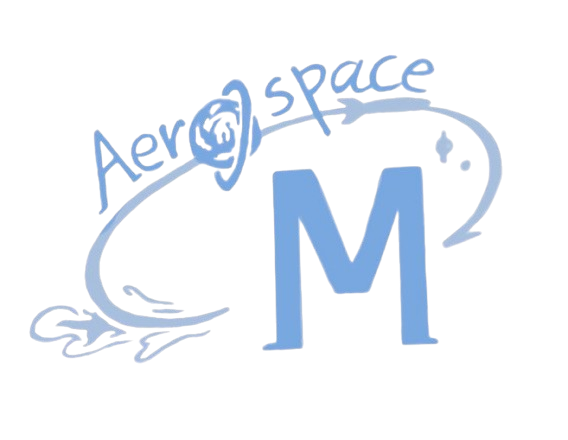
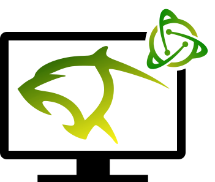

Professional Experience
Rowan University
Research Assistant
June 2025 - August 2025
During the summer of 2025, I worked as a research assistant under Dr. Lele of the Mechanical and
Aerospace Engineering Department, contributing to a larger project to discover thermoelectric
materials with a higher zT figure of merit than currently known materials through deep neural networks.
My specific role was to investigate the effects of line defects in thermoelectric materials on lattice
thermal conductivity using molecular dynamic simulations in LAMMPS
(Large-scale Atomic/Molecular Massively Parallel Simulator).
To do this, I created scripts using Python and Bash to generate atomic structures with line and point
defects, created Slurm workflows to run
molecular dynamics
simulations on Purdue's Anvil supercomputers, and analyzed the resulting heat flux data to construct
an autocorrelation function and then extract thermal conductivity values using the Green-Kubo method.
Specific packages I used include
Matplotlib, ASE, SciPy, pandas, and NumPy.
During the process of creating the experiment and simulation setup, I had to
reference different papers to ensure the validity of the experiment. For example, I learned accurate
methods in determining the cutoff time for the Green-Kubo integral for thermal conductivity and
generating stable and realistic line defects in their correct planes that occur in pure Silicon.
In the end, my work culminated in being the lead author on an in-preparation manuscript investigating
line defect effects on thermal conductivity in silicon and germanium. Troubleshot the different and
many issues that came up, and learning about new ways to conduct experiments helped me grow to be more
flexible and develop my problem-solving abilities.

Princeton University
Research Intern
June 2024 - August 2024
During the summer of 2024, I worked as a research intern under Prof. Ju in the Mechanical and Aerospace
Engineering Department at Princeton. My research focused on using VASP(Vienna Ab initio Simulation Package) to simulate
reaction pathways of NHx, N, and H species on WO₃ (001) surfaces to help understand how plasma can
catalyze eNRR (electrochemical nitrogen reduction reactions) through a Mars-van Krevelen (MvK)
mechanism.
To study different reaction pathways and energies, I created a custom VASP-based
Slurm workflow in Python for one of Princeton's
supercomputing
clusters that analyzed POSCAR, XDATCAR, OSZICAR, and OUTCAR files from VASP to obtain relaxation
energies, create custom screenshots of the simulated systems, and analyze bonds between specific
species. In my scripts, I used Matplotlib, ASE, pandas, and NumPy.
Before I left, I took the lead to start a project by using DeepMD-kit to develop ML force fields
tailored to NHx, N, and H species' interactions with WO3 surfaces for an increase in DFT simulation
speeds.
Feel free to read my final progress report, which covers everything with more depth.
Also, feel free to read the peer-reviewed
publication I co-authored in ACS Energy Letters.

Montgomery High School Aerospace Club
Vice President
September 2024 - June 2025
As Vice President of the Aerospace Club, I was originally one of the founders of our school's Rocketry
Team competing in TARC (The American
Rocketry Challenge), which later
merged with the Aerospace Club.
For the board, we qualified for the TARC national competition twice.
Over the summer before taking the role of VP, I created, with the board, a video guide on how to build a
model rocket for TARC using Fusion 360, OpenRocket, and tools found in our workshop. Using this, I
guided weekly meetings with 30+ students to not only design, build, and 3D print rockets for TARC, but
also write CubeSat and Techrise proposals. When the time came, I supervised each rocket launch and acted
as the safety officer for all the students' rockets, improving the safety and efficiency of their test
launches.
To fund these activities, I planned and organized fundraising events over the course of my three years
on the board, raising $15K+ through STEM fundraiser initiatives, impacting over 100 primary and middle
school students.
In addition to leading students, I earned my HAM Radio Technician Class License in preparation for the
board's proposal for the NASA CubeSat challenge and future endeavors.
Over the course of a few years, I helped increase member attendance and retention by 10% (using
attendance form data) by fostering a close-knit, community-first team culture.
Before I became a board member, my team under the Aerospace Club qualified for the National NASA
TechRise challenge. In this, I spearheaded the soldering, wiring, and design of our avionics
payload
that collected low-g and high-g acceleration for the mission of creating an algorithm to characterize
the vibrational frequencies of a Rocket. In order to do so, I also programmed a script in Python to use
FFT to analyze
the data. Unfortunately, NASA never returned our payload due to difficulties, but my knowledge of these
systems has still increased.
Feel free to read a report created by us here.

Montgomery High School Computer Science Club
Co-President
September 2024 - June 2025
As Co-President of the Montgomery High School Computer Science Club, I led weekly meetings to teach
members various computer science concepts and programming languages such as Python, C++, and Machine
Learning. Along with the board, we also hosted the ACSL competition for our club members, having many
doing
extremely well.
I directed MontyHacks VII (in-person), growing its attendance by 92% from MontyHacks VI to 73 attendees
from 91 signups, and raised $39K worth of prizes, including $2.1K in cash. In it, I led a 10-member
organization team, reviewed and edited all branding/media, created a complete day-of logistics
itinerary, and established continued connections with nine sponsors. Feel free to take a look at Devpost.
I also directed MontyHacks VIII (hybrid) with a similar style, building on the past experiences and
using hacker feedback from the previous hackathon to make VII even better. In addition, I managed 69
participants from 85 in-person/remote signups and raised $3.2K worth of prizes, including $850 cash.
Feel
free to take a look at Devpost.
